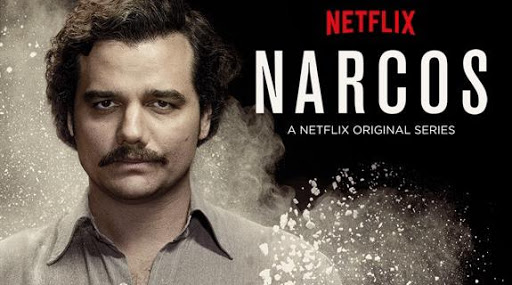
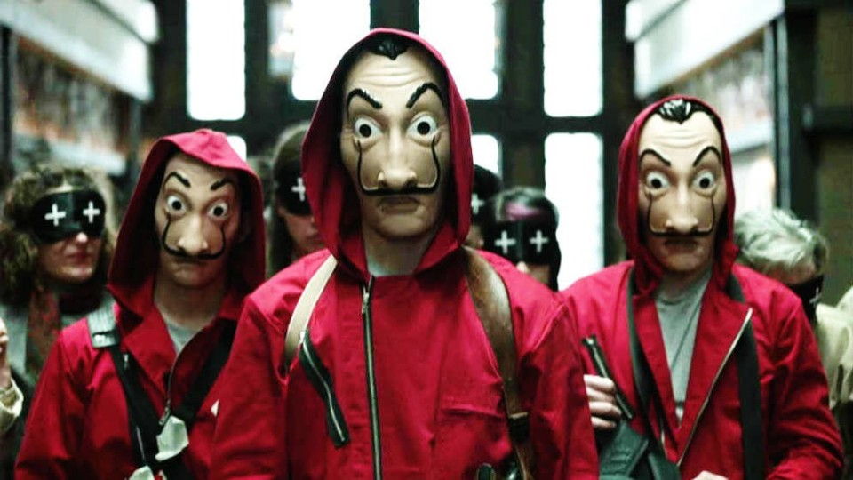
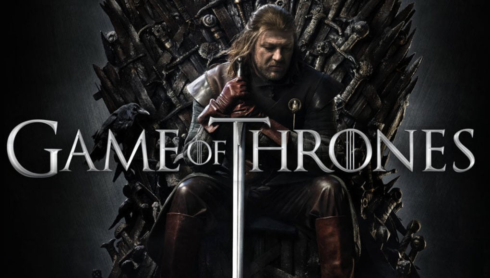
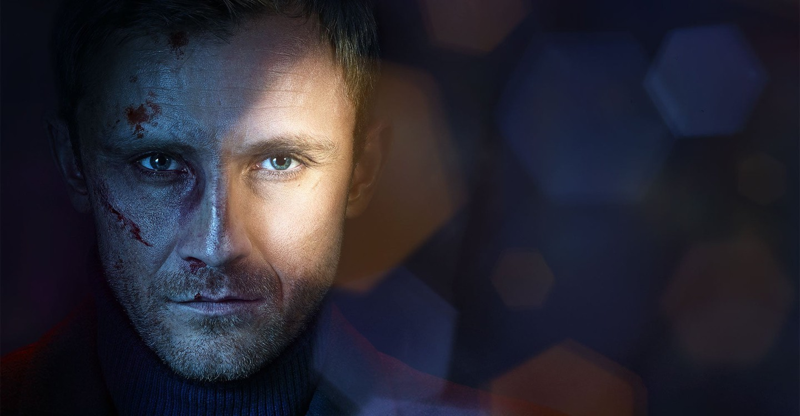
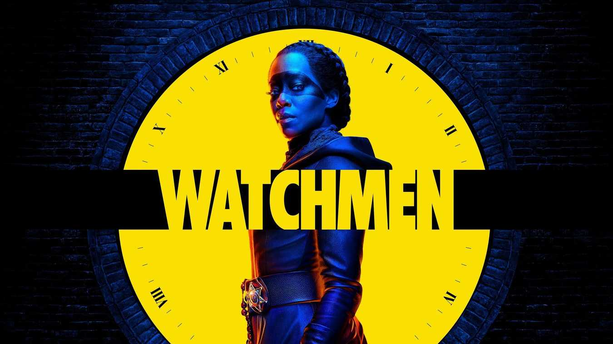
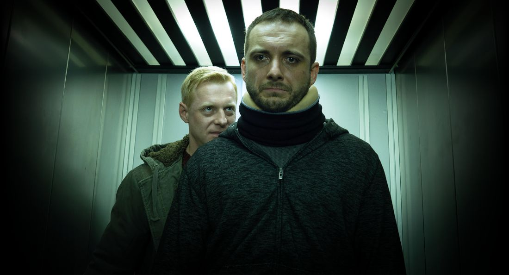
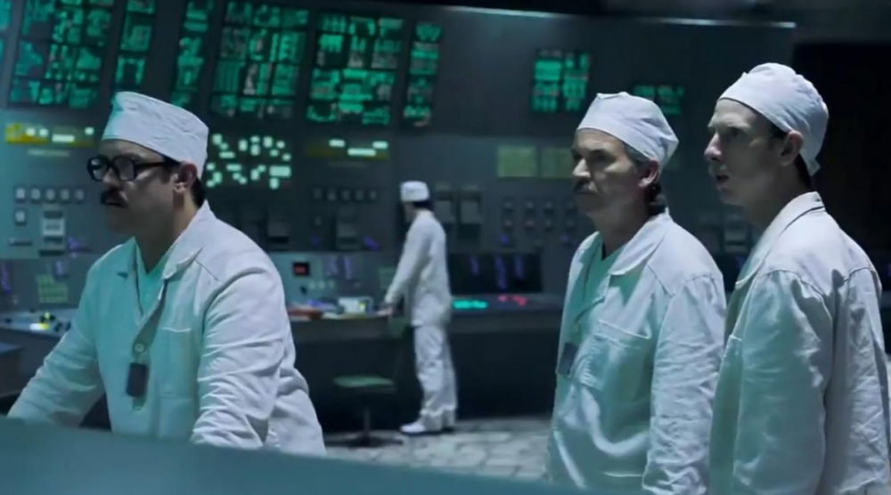
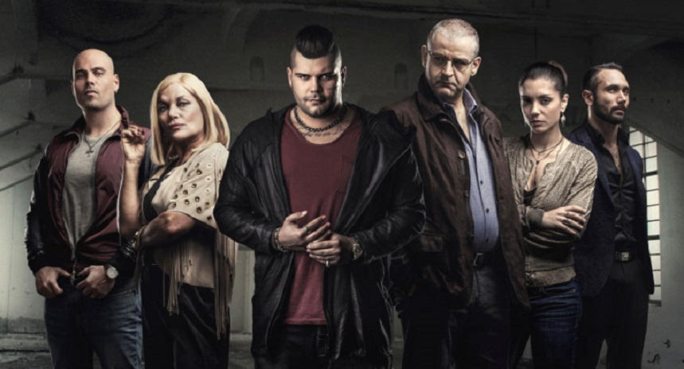
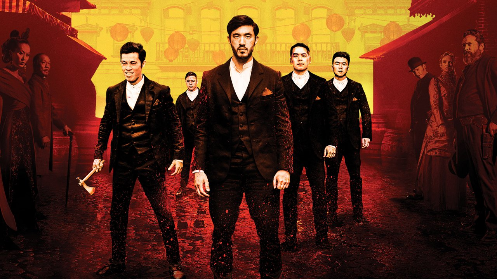
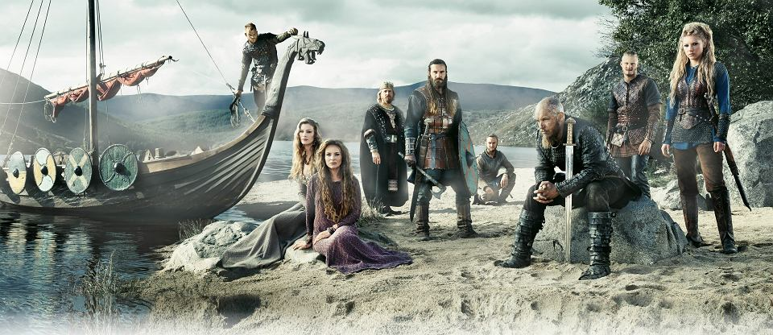

Narcos
Amerykański serial telewizyjny (thriller, dramat), wyprodukowany przez Gaumont International Television dla platformy Netflix, którego twórcami są Chris Brancato, Carlo Bernard i Doug Miro.1 kwietnia 2014 Netflix zamówił pierwszą serię Narcosa, a wszystkie 10 odcinków zostało zamieszczonych na stronie internetowej platformy w dniu 28 sierpnia 2015.Drugą serię udostępniono 2 września 2016.
6 września 2016 zapowiedziano powstanie serii trzeciej i czwartej.
Zdjęcia do pierwszych trzech serii były kręcone w Kolumbii (m.in. w Bogocie i okolicach).
Jego kontynuacją jest Narcos: Meksyk.
Pierwsze dwie serie skupiają się na życiu i działalności Pablo Escobara, najsłynniejszego kolumbijskiego barona narkotykowego, będącego szefem kartelu z Medellín, którego nielegalne iteresy zamierzają zlikwidować amerykańskie władze federalne we współpracy z rządem Kolumbii. W trzeciej serii przedmiotem zainteresowania jest kartel z Cali.

Zwiastun
Dom z Papieru( La casa de papel)
Hiszpański serial sensacyjny z 2017 roku wyprodukowany przez kanał Antena 3.Oryginalna wersja serialu składa się z 15. 70-minutowych odcinków. Wersja udostępniona w serwisie Netflix została przemontowana i składa się z 23 odcinków ok. 45-minutowych.
Tajemniczy człowiek ukrywający się pod pseudonimem „Profesor” rekrutuje grupę ośmiorga przestępców o różnych umiejętnościach. Celem jest dokonanie skoku stulecia – napadu na hiszpańską mennicę. Gdy dochodzi do realizacji planu, ludzie „Profesora” zajmują obiekt i biorą zakładników.

Zwiastun
Gra o Tron ( Game of Thrones)
Amerykański serial fantasy stworzony przez Davida Benioffa i D.B. Weissa dla HBO, będący adaptacją sagi Pieśń lodu i ognia autorstwa amerykańskiego pisarza George’a R.R. Martina. Amerykańska premiera pierwszego sezonu w HBO miała miejsce 17 kwietnia 2011, w Polsce serial zadebiutował dzień później.Od 18 kwietnia 2011 roku do 9 czerwca 2014 premiera nowego odcinka w Polsce odbywała się w poniedziałki o godzinie 22.00. Od 16 czerwca 2014 (finału czwartego sezonu) premiera polska odbywa się równolegle z amerykańską, czyli w nocy z niedzieli na poniedziałek o godzinie 3.00 czasu polskiego. Ostatni odcinek serialu wyemitowano w Stanach Zjednoczonych 19 mają 2019 roku, natomiast polska premiera miała miejsce 20 mają 2019.
Akcja serialu rozgrywa się na fikcyjnym kontynencie Westeros na którym znajduje się Siedem Królestw od położonego na północy Muru do południowego Dorne, na pobliskim kontynencie Essos oraz okolicznych wyspach. Rozpoczyna się kilkanaście lat po buncie Roberta Baratheona przeciwko władzy Aeryse II Targaryena („Szalonego Króla”), po obaleniu którego w Siedmiu Królestwach zapanował pokój. Po śmierci królewskiego namiestnika Jona Arryna panujący od czasu rebelii Robert mianował jego następcą swego przyjaciela z młodości i najwierniejszego sojusznika z czasów buntu, Eddarda „Neda” Starka.Fabuła pierwszego sezonu serialu ukazuje głównie właśnie losy Neda Starka, seniora Północy Westeros, oraz jego rodziny: żony Catelyn z rodu Tullych, ich dzieci: Robba, najstarszego syna i prawowitego dziedzica Winterfell; Sansy, urodziwej córki marzącej o zostaniu wielką damą, Aryi, często zapominającej o szlachetnym pochodzeniu na rzecz zabaw z niżej urodzonymi przyjaciółmi, Brana, pasjonata wspinaczki marzącego o przyszłości rycerza, najmłodszego z rodzeństwa Rickona, a także Jona Snow, nieślubnego syna Eddarda.Jon wstąpił do Nocnej Straży, starożytnego bractwa strzegącego wielkiego Muru, oddzielającego Siedem Królestw od tajemniczej krainy wiecznej zimy. Bran, przypadkowy świadek kazirodczego stosunku pomiędzy królową Cersei z rodu Lannisterów i jej bratem imieniem Jaime, zabójcą Aerysa, został przez tego ostatniego wypchnięty z wieży, co spowodowało paraliż od pasa w dół. W efekcie lord Stark wyruszył do stolicy z córkami.Równolegle rozwijany wątek pokazuje dzieje Daenerys Targaryen i jej brata, młodszych dzieci Aerysa, którzy za Wąskim Morzem planują powrót i ponowne przejęcie rządów.

Zwiastun
Ślepnąc od Świateł
Polski serial telewizyjny (kryminał, thriller neo-noir), stworzony przez Krzysztofa Skoniecznego i Jakuba Żulczyka, wyprodukowany przez HBO Polska, HBO Europe oraz House Media Company Sp. z o.o., na motywach bestsellerowej powieści o tym samym tytule z 2014 r., autorstwa Jakuba Żulczyka.27 października 2018 udostępniony w całości (wszystkie 8 odcinków) za pośrednictwem internetowego serwisu „wideo na życzenie” HBO GO, a emitowany od 27 października 2018 do 16 grudnia 2018 na antenie HBO Polska, oraz od jesieni 2019 w Polsacie.
Serial opowiada 7 dni z życia Kuby Niteckiego – znanego, lecz tajemniczego, warszawskiego dilera kokainy, którego klientelą są: politycy, celebryci, biznesmeni, gwiazdy hip-hopu, czy hipsterzy. Nitecki obraca się w gronie lokalnych gangsterów dowodzonych przez Władka „Stryja”, a ich wspólnym szefem jest Jacek. Zmęczony dotychczasowym życiem, postanawia uciec i wyjechać do Argentyny. W międzyczasie, po kilkuletnim wyroku, z więzienia wychodzi „Dario”, gangster starej daty.

Zwiastun
Watchmen
Amerykański serial fantastycznonaukowy będący kontynuacją komiksu wydawnictwa DC Comics Strażnicy z 1987 roku autorstwa Alana Moore’a i Dave’a Gibbonsa. Serial został stworzony przez Damona Lindelofa dla stacji HBO. W głównych rolach występują: Regina King, Don Johnson, Tim Blake Nelson, Yahya Abdul-Mateen II, Andrew Howard, Jacob Ming-Trent, Tom Mison, Sara Vickers, Dylan Schombing, Louis Gossett Jr., Jeremy Irons, Jean Smart i Hong Chau.Serial emitowany jest na kanale HBO oraz w serwisie HBO GO od 20 października 2019 roku. W Polsce serial ten jest dostępny również na kanale HBO i platformie HBO GO od 21 października 2019 roku.
Serial opowiadający o świecie, w którym superbohaterowie zostają wyjęci spod prawa z powodu swoich brutalnych metod działania.

Zwiastun
Kruk Szepty słychać po zmroku
Polski serial kryminalny z 2018 roku w reżyserii Macieja Pieprzycy produkcji Canal+.
Po wielu latach inspektor policji Adam Kruk wraca z Łodzi na Podlasie, miejsce swojego dzieciństwa. Tam mierzy się ze sprawą porwania chłopca, a także swoją przeszłością, związaną z pedofilską działalnością w domu dziecka. Serial zawiera wiele elementów fantastycznych takich jak rozmowy z ludźmi, którzy już nie żyją, istnienie postaci, którą widzi tylko główny bohater, która jednak potrafi oddziaływać na otoczenie (np. w jednej ze scen wystraszył dziecko).
W serialu został wykorzystany wiersz Danuty Wawiłow pt. "Jak tu ciemno", który był czytany kilkakrotnie w różnych odcinkach.

Zwiastun
Czarnobyl(Chernobyl)
Brytyjsko-amerykański pięcioodcinkowy miniserial produkcji stworzony przez Craiga Mazina i wyreżyserowany przez Johana Rencka.Serial przedstawia fabularyzowaną historię katastrofy elektrowni jądrowej w Czarnobylu. Film częściowo został oparty na książce Swiatłany Aleksijewicz pt. Krzyk Czarnobyla.
1.odc pt.„1:23:45”
26 kwietnia 1986 r., Ukraińska SRR. Pracownicy zakładu i strażacy poświęcają życie, aby opanować katastrofalną eksplozję w radzieckiej elektrowni jądrowej.
2.odc pt.„Please Remain Calm”
W obliczu zagrożenia wielu milionów ludzi po wybuchu w Czarnobylu, fizyk jądrowy Uliana Chomiuk podejmuje desperacką próbę dotarcia do Walerija Legasowa, czołowego radzieckiego fizyka jądrowego i ostrzega go przed groźbą drugiej eksplozji, która mogłaby zniszczyć kontynent.
3.odc pt.„Open Wide, O Earth”
Ludmiła Ignatienko, mieszkanka Prypeci, ignoruje ostrzeżenie o skażeniu męża strażaka i postanawia go zobaczyć. Walerij Legasow przedstawia plan dekontaminacji, uwzględniający ryzyko dla ludzi.
4.odc pt.„The Happiness of All Mankind”
Walerij Legasow i radziecki wicepremier Boris Szczerbina rozważają użycie łazików księżycowych do usuwania radioaktywnych szczątków, podczas gdy Uliana Chomiuk napotyka rządowe przeszkody w ustaleniu prawdy o przyczynie eksplozji.
5.odc pt.„Vichnaya Pamyat”
Walerij Legasow, Boris Szczerbina i Uliana Chomiuk ryzykują życiem i reputacją, aby ujawnić prawdę o Czarnobylu.

Zwiastun
Gomora( Gomorra - La serie)
To włoski serial telewizyjny kryminał, stworzony i wyprodukowany przez Roberta Saviano , na podstawie książki Saviano o tym samym tytule . Pierwotnie był emitowany na antenie Sky Atlantic we Włoszech w dniu 6 maja 2014 r. I działał przez cztery sezony. Premiera odbyła się w Wielkiej Brytanii na Sky Atlantic w dniu 4 sierpnia 2014 r., A w Stanach Zjednoczonych na SundanceTV w dniu 24 sierpnia 2016 r.Serię sprzedawano również w 170 krajach na całym świecie.
Opowiada historię Ciro Di Marzio, członka klanu Savastano , kierowanego przez Pietro Savastano , członka wysokiego szczebla. Ciro dąży do pokonania niebezpieczeństw związanych ze światem przestępczym, jednocześnie prowadząc brutalną wojnę domową.Tytuł jest sztuką na neapolitańskim syndykacie kryminalnym Camorra , a serial jest osadzony i nakręcony w Neapolu . Rodzina Savastano składa się również z jego żony Immacolaty i syna, Gennaro. W serialu występuje także rywalizujący z nim szef zbrodni Salvatore Conte, a także w późniejszych sezonach wprowadza bohaterki Annalisa Magliocca, Patrizia SantoreGiuseppe Avitabile.
Po wydaniu Gomorrah zyskał uznanie krytyków za swoją charakterystykę , tempo, atmosferę, aktorstwo, reżyserię i pisanie. Stało się także hitem dla Sky , regularnie występującym jako jeden z najczęściej oglądanych programów kablowych w sieci.

Zwiastun
Wojownik(Warrior)
Amerykański serial telewizyjny (dramat akcji, sztuki walki) wyprodukowany przez Perfect Storm Entertainment oraz Bruce Lee Entertainment, który jest emitowany od 5 kwietnia 2019 roku przez Cinemax. W Polsce jest emitowany od 4 maja 2019 roku przez Cinemax Polska.
Akcja serialu dzieje się w czasie wojny secesyjnej w chińskiej dzielnicy San Francisco. Fabuła skupia się na Ahie Sahmie, który przybył z Chin i wdaje się w zatargi z gangami z chińskiej dzielnicy.

Zwiastun
Wikingowie(Vikings)
Kanadyjsko-irlandzki serial telewizyjny stworzony przez Michaela Hirsta dla kanału telewizyjnego History w Kanadzie, który miał swoją premierę 3 marca 2013 roku. Polska premiera pierwszej serii odbyła się 21 października 2013 roku na kanale History oraz 1 czerwca 2014 roku na kanale TV Puls. Polska premiera drugiej serii odbyła się na kanale History 22 kwietnia 2014 roku, a od 4 listopada 2014 roku emitowana była w TV Puls. Trzecia seria miała premierę 19 lutego 2015 roku, a Polska premiera trzeciej serii odbyła się 30 sierpnia 2015 roku, również na kanale History[1]. Seria czwarta rozpoczęła się 18 lutego 2016 w Ameryce, dzień później premierę miała w Polsce. Seria piąta rozpoczęła się 29 listopada 2017 w Ameryce, dzień później premierę miała w Polsce. We wrześniu 2017 r. został ogłoszony szósty sezon z kolejnymi 20 odcinkami, w którym po raz pierwszy reżyserować będzie Katheryn Winnick, jedna z głównych aktorek serialu. Będzie to końcowy sezon serii.
Akcja serialu rozgrywa się w Skandynawii u schyłku VIII w. Wiking Ragnar Lodbrok jest sfrustrowany polityką lokalnego jarla Haraldsona, który co roku wysyła wojowników na łupieżcze wyprawy na wschód, który – jak ocenia Lodbrok – jest uboższy, niż ziemie na zachodzie. Prosi szkutnika Flokiego o zbudowanie łodzi, dzięki której udaje im się dopłynąć do Anglii[2]. Ujawniające się zdolności przywódcze i organizacyjne Ragnara oraz powodzenie pierwszej wyprawy na obce ziemie budzą w panującym jarlu zazdrość, a jednocześnie obawy o własną pozycję i autorytet. Chęć pozbycia się rywala prowadzi go jednak do zguby i ginie w pojedynku z Ragnarem. Ten zaś zajmuje jego miejsce i zostaje jarlem. Jako nieustraszony wojownik jest ucieleśnieniem nordyckiej tradycji i oddania się bogom. Legenda mówi, że jest on bezpośrednim potomkiem Odyna, boga wojny i wojowników.

Zwiastun
Kliknij w sprawie współpracy
`